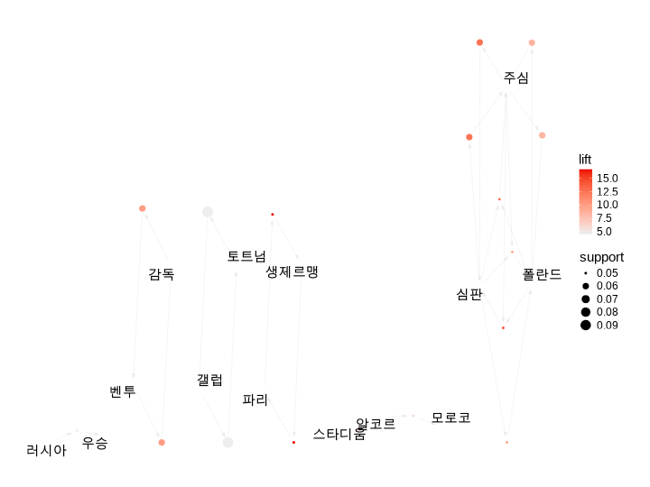

텍스트 데이터 수집
데이터 수집
인증키와 키워드 입력
- client_id, client_secret는 사용자의 API 인증키를 삽입
library(koscrap)
# Naver 뉴스 API 인증키
client_id <- "D_7oXG2_osfloS1rLW2X"
client_secret <- "7Q8pd9QSnM"
# 검색 키워드
keyword <- "월드컵"
날짜 정렬 기준 수집
- 날짜 기준 정렬로 1,000건의 뉴스를 수집
n <- 1000
# 날짜 정렬 수집
news_worldcup_date <- search_naver(
keyword, client_id = client_id, client_secret = client_secret,
do_done = TRUE, max_record = n
)
* 검색된 총 기사 건수는 2750720건입니다.
- (100/1000)건 호출을 진행합니다.
- (200/1000)건 호출을 진행합니다.
- (300/1000)건 호출을 진행합니다.
- (400/1000)건 호출을 진행합니다.
- (500/1000)건 호출을 진행합니다.
- (600/1000)건 호출을 진행합니다.
- (700/1000)건 호출을 진행합니다.
- (800/1000)건 호출을 진행합니다.
- (900/1000)건 호출을 진행합니다.
- (1000/1000)건 호출을 진행합니다.유사도 정렬 기준 수집
- 유사도 기준 정렬로 1,000건의 뉴스를 수집
# 유사도 정렬 수집
news_worldcup_sim <- search_naver(
keyword, client_id = client_id, client_secret = client_secret, sort = "sim",
do_done = TRUE, max_record = n
)
* 검색된 총 기사 건수는 2750720건입니다.
- (100/1000)건 호출을 진행합니다.
- (200/1000)건 호출을 진행합니다.
- (300/1000)건 호출을 진행합니다.
- (400/1000)건 호출을 진행합니다.
- (500/1000)건 호출을 진행합니다.
- (600/1000)건 호출을 진행합니다.
- (700/1000)건 호출을 진행합니다.
- (800/1000)건 호출을 진행합니다.
- (900/1000)건 호출을 진행합니다.
- (1000/1000)건 호출을 진행합니다.- 데이터를 수집하는 시점에 따라 결과가 다르겠지만, 각각 1000건의 데이터가 수집되었습니다. 변수의 개수는 7개입니다.
- 앞, 뒤의 몇 건을 조회
head(news_worldcup_date)
title
1 '구찌와 함께'… 카메라 앞 '황소' 황희찬, '독보적 매력 발산'
2 권영찬 교수, 19일 공기업 초청 송년회서 특강 진행
3 조용한 왕국 모로코 축구 반란, MENA권 희망의 슛 쏘다
4 [<b>월드컵</b>] 메시 원맨팀 아니다…아르헨티나 '비밀병기' 페르난데스에 기대
5 벤투, FIFA 인터뷰서 태극전사에 감탄사 "프로 의식에 특히 고맙다"
6 WC 결승 주심, 2년 전 클롭 분노케 한 바로 그 주심
originallink
1 https://www.besteleven.com/news/articleView.html?idxno=214751
2 https://www.jejutwn.com/news/article.html?no=156243
3 https://www.joongang.co.kr/article/25126412
4 https://www.spotvnews.co.kr/news/articleView.html?idxno=572547
5 https://www.xportsnews.com/article/1666412
6 http://www.mydaily.co.kr/new_yk/html/read.php?newsid=202212170005128242&ext=na&utm_campaign=naver_news&utm_source=naver&utm_medium=related_news
link
1 https://sports.news.naver.com/news.nhn?oid=343&aid=0000118389
2 https://www.jejutwn.com/news/article.html?no=156243
3 https://n.news.naver.com/mnews/article/353/0000043818?sid=102
4 https://sports.news.naver.com/news.nhn?oid=477&aid=0000400586
5 https://sports.news.naver.com/news.nhn?oid=311&aid=0001536351
6 https://sports.news.naver.com/news.nhn?oid=117&aid=0003678722
description
1 잉글랜드 프리미어리그(EPL) 클럽 울버햄튼 원더러스 소속의 황희찬은 얼마 전 대한민국 국가대표팀의 유니폼을 입고 2022 FIFA(국제축구연맹) 카타르 <b>월드컵</b>에 출전했다. 조별 라운드 3번째 경기였던 포르투갈전에서는...
2 지난 16일 소속사에 따르면 권 교수는 이번 강연에서 최근 카타르 <b>월드컵</b>에서 12년 만에 원정 16강이라는 염원을 현실로 이뤄낸 우리 대표팀의 불꽃 투혼과 더불어 EPL에서 뛰고 있는 ‘캡틴’ 손흥민과 ‘황소’ 황희찬...
3 ━ 지구촌 정치 지형 바꾼 <b>월드컵</b> FIFA <b>월드컵</b>은 글로벌 사회의 진열대이자 문화 교류의 응접실이다. 시합 중계를 통해 전 세계 축구 선수들의 기량·전술과 경기 결과는 물론 경기장을 찾은 개최국·출전국 관람객과...
4 아르헨티나가 2022 카타르 <b>월드컵</b> 결승전을 앞두고 있다. 19일 새벽 12시(이하 한국시간) 프랑스와 우승컵을 놓고 다툰다. 이번 대회는 메시의 마지막 <b>월드컵</b>으로 주목을 받는다. <b>월드컵</b> 우승만 빼고 이룰 건 다 이룬 메시다....
5 파울루 벤투 전 한국 축구대표팀 감독이 카타르 <b>월드컵</b>에서 대한민국을 지도한 것에 대해 “내 인생에서... FIFA가 공개한 내용에서 벤투 감독은 “2022 카타르 <b>월드컵</b>에서 대한민국을 지도한 것이 내 인생에서 가장...
6 2022 카타르 <b>월드컵</b> 대망의 결승. 아르헨티나와 프랑스가 오는 19일 격돌한다. 이 경기에 나설 주심이 결정됐다. 주인공은 폴란드 출신의 시몬 마르치니아크 심판이다. 폴란드 심판이 FIFA <b>월드컵</b> 결승 주심으로 배정된...
publish_date
1 2022-12-17 00:51:00
2 2022-12-17 00:48:00
3 2022-12-17 00:38:00
4 2022-12-17 00:38:00
5 2022-12-17 00:36:00
6 2022-12-17 00:31:00
title_text
1 구찌와 함께 카메라 앞 황소 황희찬 독보적 매력 발산
2 권영찬 교수 19일 공기업 초청 송년회서 특강 진행
3 조용한 왕국 모로코 축구 반란 MENA권 희망의 슛 쏘다
4 월드컵 메시 원맨팀 아니다아르헨티나 비밀병기 페르난데스에 기대
5 벤투 FIFA 인터뷰서 태극전사에 감탄사 프로 의식에 특히 고맙다
6 WC 결승 주심 2년 전 클롭 분노케 한 바로 그 주심
description_text
1 잉글랜드 프리미어리그(EPL) 클럽 울버햄튼 원더러스 소속의 황희찬은 얼마 전 대한민국 국가대표팀의 유니폼을 입고 2022 FIFA(국제축구연맹) 카타르 월드컵에 출전했다. 조별 라운드 3번째 경기였던 포르투갈전에서는...
2 지난 16일 소속사에 따르면 권 교수는 이번 강연에서 최근 카타르 월드컵에서 12년 만에 원정 16강이라는 염원을 현실로 이뤄낸 우리 대표팀의 불꽃 투혼과 더불어 EPL에서 뛰고 있는 ‘캡틴’ 손흥민과 ‘황소’ 황희찬...
3 ━ 지구촌 정치 지형 바꾼 월드컵 FIFA 월드컵은 글로벌 사회의 진열대이자 문화 교류의 응접실이다. 시합 중계를 통해 전 세계 축구 선수들의 기량·전술과 경기 결과는 물론 경기장을 찾은 개최국·출전국 관람객과...
4 아르헨티나가 2022 카타르 월드컵 결승전을 앞두고 있다. 19일 새벽 12시(이하 한국시간) 프랑스와 우승컵을 놓고 다툰다. 이번 대회는 메시의 마지막 월드컵으로 주목을 받는다. 월드컵 우승만 빼고 이룰 건 다 이룬 메시다....
5 파울루 벤투 전 한국 축구대표팀 감독이 카타르 월드컵에서 대한민국을 지도한 것에 대해 내 인생에서... FIFA가 공개한 내용에서 벤투 감독은 2022 카타르 월드컵에서 대한민국을 지도한 것이 내 인생에서 가장...
6 2022 카타르 월드컵 대망의 결승. 아르헨티나와 프랑스가 오는 19일 격돌한다. 이 경기에 나설 주심이 결정됐다. 주인공은 폴란드 출신의 시몬 마르치니아크 심판이다. 폴란드 심판이 FIFA 월드컵 결승 주심으로 배정된... tail(news_worldcup_sim)
title
995 [2022<b>월드컵</b>] 프랑스, 모로코 꺾어…아르헨티나와 결승전
996 메시vs음바페, <b>월드컵</b> 우승 놓고 신들의 전쟁 펼쳐진다
997 콤팩트 <b>월드컵</b> 효과…인판티노 FIFA회장 모든 경기 관전
998 압도적 격차…카타르 <b>월드컵</b>에서 가장 인상적으로 활약한 선수 1위, 좀 뜻밖이...
999 박지성, '<b>월드컵</b> 스타' 조규성과 현대차 대강당에 선 사연은?
1000 김상겸, 이탈리아 스노보드 <b>월드컵</b>서 11위…이상호 20위
originallink
995 https://news.jtbc.co.kr/article/article.aspx?news_id=NB12107173
996 http://starin.edaily.co.kr/news/newspath.asp?newsid=01108646632559176
997 http://www.newsis.com/view/?id=NISX20221214_0002123590&cID=10523&pID=10500
998 https://www.wikitree.co.kr/articles/816025
999 http://news.tf.co.kr/read/economy/1986329.htm
1000 http://www.newsis.com/view/?id=NISX20221216_0002125336&cID=10501&pID=10500
link
995 https://n.news.naver.com/mnews/article/437/0000325156?sid=104
996 https://n.news.naver.com/mnews/article/018/0005388183?sid=104
997 https://n.news.naver.com/mnews/article/003/0011592305?sid=104
998 https://www.wikitree.co.kr/articles/816025
999 https://n.news.naver.com/mnews/article/629/0000190477?sid=101
1000 https://sports.news.naver.com/news.nhn?oid=003&aid=0011594558
description
995 프랑스가 2회 연속 <b>월드컵</b> 우승에 도전합니다. 15일(한국시간) 카타르 알바이트 스타디움에서 열린 4강전에서 프랑스는 모로코를 상대로 2대0 승리했습니다. 프랑스는 공격 중심의 축구로 전반부터 모로코를...
996 사진=AP PHOTO 2022 카타르<b>월드컵</b> 결승전에서 전세계 축구팬들이 바라는 ‘축구 신들의 전쟁’이 펼쳐진다.... 이로써 프랑스는 4년 전 우승을 차지했던 러시아<b>월드컵</b>에 이어 또다시 결승에 진출했다. 만약 프랑스가...
997 카타르<b>월드컵</b>에서 사실상 거의 모든 경기를 현장에서 직관한 것으로 알려졌다. 15일 대한축구협회 고위 관계자에 따르면 인판티노 회장은 역대 피파 회장으로는 처음으로 <b>월드컵</b> 전 경기를 현장에서 관전했다고 자랑한...
998 카타르 <b>월드컵</b>에서 가장 인상적으로 활약한 선수에 대한 여론 조사 결과가 발표됐다. 한국갤럽은 지난 13일... 그는 비록 이번 <b>월드컵</b>에서 득점을 기록하진 못했지만 국민들의 압도적인 지지를 받으며 당당히 1위에...
999 현대차 <b>월드컵</b> 캠페인 글로벌 홍보대사 박지성, 임직원 대상 특강 박지성 "환경·지속가능성 중요성 알리고 해결책 찾아야" 현대자동차(현대차) <b>월드컵</b> 캠페인 글로벌 홍보대사 박지성과 2022 FIFA <b>월드컵</b>(이하 2022 <b>월드컵</b>)...
1000 스노보드 <b>월드컵</b> 이탈리아 대회에서 11위에 올랐다. 김상겸은 15일(현지시간) 이탈리아 카레차에서 열린 2022~2023 FIS 스노보드 <b>월드컵</b> 알파인 남자 평행대회전 16강전에서 안드레아스 프롬메거(오스트리아)에 0....
publish_date
995 2022-12-15 06:35:00
996 2022-12-16 07:19:00
997 2022-12-15 09:00:00
998 2022-12-16 12:32:00
999 2022-12-16 11:01:00
1000 2022-12-16 08:59:00
title_text
995 2022월드컵 프랑스 모로코 꺾어아르헨티나와 결승전
996 메시vs음바페 월드컵 우승 놓고 신들의 전쟁 펼쳐진다
997 콤팩트 월드컵 효과인판티노 FIFA회장 모든 경기 관전
998 압도적 격차카타르 월드컵에서 가장 인상적으로 활약한 선수 1위 좀 뜻밖이
999 박지성 월드컵 스타 조규성과 현대차 대강당에 선 사연은
1000 김상겸 이탈리아 스노보드 월드컵서 11위이상호 20위
description_text
995 프랑스가 2회 연속 월드컵 우승에 도전합니다. 15일(한국시간) 카타르 알바이트 스타디움에서 열린 4강전에서 프랑스는 모로코를 상대로 2대0 승리했습니다. 프랑스는 공격 중심의 축구로 전반부터 모로코를...
996 사진=AP PHOTO 2022 카타르월드컵 결승전에서 전세계 축구팬들이 바라는 ‘축구 신들의 전쟁’이 펼쳐진다.... 이로써 프랑스는 4년 전 우승을 차지했던 러시아월드컵에 이어 또다시 결승에 진출했다. 만약 프랑스가...
997 카타르월드컵에서 사실상 거의 모든 경기를 현장에서 직관한 것으로 알려졌다. 15일 대한축구협회 고위 관계자에 따르면 인판티노 회장은 역대 피파 회장으로는 처음으로 월드컵 전 경기를 현장에서 관전했다고 자랑한...
998 카타르 월드컵에서 가장 인상적으로 활약한 선수에 대한 여론 조사 결과가 발표됐다. 한국갤럽은 지난 13일... 그는 비록 이번 월드컵에서 득점을 기록하진 못했지만 국민들의 압도적인 지지를 받으며 당당히 1위에...
999 현대차 월드컵 캠페인 글로벌 홍보대사 박지성, 임직원 대상 특강 박지성 환경·지속가능성 중요성 알리고 해결책 찾아야 현대자동차(현대차) 월드컵 캠페인 글로벌 홍보대사 박지성과 2022 FIFA 월드컵(이하 2022 월드컵)...
1000 스노보드 월드컵 이탈리아 대회에서 11위에 올랐다. 김상겸은 15일(현지시간) 이탈리아 카레차에서 열린 2022~2023 FIS 스노보드 월드컵 알파인 남자 평행대회전 16강전에서 안드레아스 프롬메거(오스트리아)에 0.... 간단한 데이터 요약
뉴스 빈발 단어
- 빈발단어를 워드클라우드로 시각화하는 함수를 만듦
# create UDF
create_wordcloud <- function(data, remove_n = 5, min_freq = 5, background = "white") {
data %>%
filter(nchar(description_text) > 0) %>%
tidytext::unnest_tokens(noun, description_text, bitTA::morpho_mecab, type = "noun") %>%
group_by(noun) %>%
count() %>%
arrange(desc(n)) %>%
ungroup() %>%
filter(n >= min_freq) %>%
filter(row_number() > remove_n) %>%
wordcloud2::wordcloud2(backgroundColor = background,
fontFamily = "NanumSquare")
}
- 날짜 기준으로 정렬 수집한 뉴스에 대해서 워드클라우드를 그려 봅니다.
(#fig:wcloud_wcupdate)날짜 기준 월드컵 뉴스
- 유사도 기준으로 정렬 수집한 뉴스에 대해서 워드클라우드를 그려 봅니다.
news_worldcup_sim %>%
create_wordcloud(remove_n = 20, min_freq = 2)
(#fig:wcloud_wcupsim)유사도 기준 월드컵 뉴스
정규표현식의 이해
패턴 검색
유사도 정렬 기준으로 수집한 뉴스 중에서 선수와 감독의 이름이 포함된 기사의 건수를 계산합니다.
persons <- c("벤투", "손흥민", "조규성", "이강인", "호날두", "메시")
persons %>%
purrr::map_int(
function(x) {
news_worldcup_sim %>%
filter(stringr::str_detect(description_text, x)) %>%
tally() %>%
pull()
}
)
[1] 98 239 41 41 20 161각각의 기사에서 해당 선수와 감독의 이름이 평균 몇 번 등장하는지 계산합니다.
persons <- c("벤투", "손흥민", "조규성", "이강인", "호날두", "메시")
persons %>%
purrr::map_dbl(
function(x) {
news_worldcup_sim %>%
filter(stringr::str_detect(description_text, x)) %>%
mutate(n_talk = stringr::str_count(description_text, x)) %>%
summarise(n_avg = mean(n_talk, na.rm = TRUE)) %>%
pull()
}
)
[1] 1.102041 1.209205 1.243902 1.975610 1.500000 1.621118Document Term Matrix의 이해
DTM 생성하기
유사도 정렬 기준 뉴스의 Term Frequency 기반의 DTM과 TF-IDF 기반의 DTM을 생성합니다. 뉴스 데이터는 문서 아이디로 사용할 변수가 없기 때문에 아이디를 만듧니다.
news_worldcup_sim <- news_worldcup_sim %>%
mutate(id = row_number())
TERM FREQUENCY 기반의 DTM
- 인명인 고유명사도 함께 추출한 DTM을 만들기 위해서 unnest_noun_ngrams() 함수의 type 인수값에 “noun2”를 사용합니다
library(tidyverse)
library(bitTA)
library(tidytext)
library(tm)
dtm_tf <- news_worldcup_sim %>%
unnest_noun_ngrams(term, description_text, n = 1, type = "noun2") %>%
filter(!str_detect(term, "[[a-zA-Z]]+")) %>%
count(id, term, sort = TRUE) %>%
cast_dtm(id, term, n)
tm::inspect(dtm_tf)
<<DocumentTermMatrix (documents: 1000, terms: 616)>>
Non-/sparse entries: 19670/596330
Sparsity : 97%
Maximal term length: 6
Weighting : term frequency (tf)
Sample :
Terms
Docs 결승전 선수 시간 월드컵 일 카타르 팀 프랑스 한국 활약
197 0 0 0 2 2 0 0 0 0 0
296 0 0 0 2 2 0 0 0 0 0
395 0 0 0 2 2 0 0 0 0 0
494 0 0 0 2 2 0 0 0 0 0
593 0 0 0 2 2 0 0 0 0 0
692 0 0 0 2 2 0 0 0 0 0
791 0 0 0 2 2 0 0 0 0 0
890 0 0 0 2 2 0 0 0 0 0
98 0 0 0 2 2 0 0 0 0 0
989 0 0 0 2 2 0 0 0 0 0TF-IDF 기반의 DTM
dtm_tfidf <- news_worldcup_sim %>%
unnest_noun_ngrams(term, description_text, n = 1, type = "noun2") %>%
filter(!str_detect(term, "[[a-zA-Z]]+")) %>%
count(id, term, sort = TRUE) %>%
cast_dtm(id, term, n, weighting = tm::weightTfIdf)
tm::inspect(dtm_tfidf)
<<DocumentTermMatrix (documents: 1000, terms: 616)>>
Non-/sparse entries: 19670/596330
Sparsity : 97%
Maximal term length: 6
Weighting : term frequency - inverse document frequency (normalized) (tf-idf)
Sample :
Terms
Docs 결승전 메시 명 선수 손흥민 아르헨티나 인상 팀 프랑스 활약
1000 0 0 0 0 0 0 0 0 0 0
174 0 0 0 0 0 0 0 0 0 0
273 0 0 0 0 0 0 0 0 0 0
372 0 0 0 0 0 0 0 0 0 0
471 0 0 0 0 0 0 0 0 0 0
700 0 0 0 0 0 0 0 0 0 0
75 0 0 0 0 0 0 0 0 0 0
799 0 0 0 0 0 0 0 0 0 0
898 0 0 0 0 0 0 0 0 0 0
997 0 0 0 0 0 0 0 0 0 0Correlation Analysis
각각의 선수와 감독별로 상관계수가 0.4 이상인 단어를 추출해봅니다. ### Term Frequency
persons <- c("벤투", "손흥민", "조규성", "이강인", "호날두", "메시")
persons %>%
purrr::map(
function(x) tm::findAssocs(dtm_tf, terms = x, corlimit = 0.4)
)
[[1]]
[[1]]$벤투
감독 파울루 동행
0.80 0.70 0.57
[[2]]
[[2]]$손흥민
인상 활약 토트넘 선수 국내외 갤럽 결과 국민 전국 명
0.72 0.72 0.68 0.62 0.56 0.50 0.50 0.48 0.48 0.44
이상 세
0.42 0.42
[[3]]
[[3]]$조규성
등장 외국 이름 황희
0.81 0.81 0.81 0.49
[[4]]
[[4]]$이강인
마요르카 유튜브 일원 채널 복귀 스페인 팀
0.95 0.95 0.95 0.95 0.67 0.67 0.48
소속
0.48
[[5]]
[[5]]$호날두
상태 마드리드 사용 시설 조기 퇴장 몸
0.95 0.89 0.89 0.89 0.89 0.89 0.77
일정 이후 휴식 포르투갈 결별 드 맨유
0.63 0.63 0.63 0.55 0.44 0.44 0.44
맨체스터 무적 신세 유나이티 유지 잉글랜드 좌절
0.44 0.44 0.44 0.44 0.44 0.44 0.44
뒤 수
0.43 0.43
[[6]]
[[6]]$메시
리오넬 아르헨티나 생제르맹 파리 불참 관리
0.69 0.59 0.55 0.55 0.47 0.43
의료진 정기 훈련
0.43 0.43 0.41 연관분석
Binary Term Frequency 기반 DTM 생성
dtm_bin_tf <- news_worldcup_sim %>%
unnest_noun_ngrams(term, description_text, n = 1, type = "noun2") %>%
filter(!str_detect(term, "[[a-zA-Z]]+")) %>%
count(id, term, sort = TRUE) %>%
cast_dtm(id, term, n, weighting = tm::weightBin)
불용어 제거
상위 50위인 단어를 불용어로 처리하여 제거합니다.
stop_words <- dtm_bin_tf %>%
apply(2, sum) %>%
sort(decreasing = TRUE) %>%
"["(1:30) %>%
names()
stop_words
[1] "월드컵" "카타르" "일" "한국"
[5] "선수" "시간" "프랑스" "활약"
[9] "팀" "손흥민" "대표" "결승전"
[13] "국제축구연맹" "인상" "축구" "만"
[17] "아르헨티나" "명" "년" "결승"
[21] "세" "메시" "강" "카타르월드컵"
[25] "진출" "국내외" "이번" "전국"
[29] "국민" "이상" Transactions 생성하기
transactions in sparse format with
1000 transactions (rows) and
585 items (columns)summary(trans)
transactions as itemMatrix in sparse format with
1000 rows (elements/itemsets/transactions) and
585 columns (items) and a density of 0.0195641
most frequent items:
토트넘 갤럽 우승 중 영국 (Other)
145 142 141 117 114 10786
element (itemset/transaction) length distribution:
sizes
2 3 4 5 6 7 8 9 10 11 12 13 14 15 16 17 18
10 74 32 24 30 40 53 31 75 113 85 78 126 62 52 11 54
19 21 24 25
20 10 10 10
Min. 1st Qu. Median Mean 3rd Qu. Max.
2.00 8.00 12.00 11.45 14.00 25.00
includes extended item information - examples:
labels
1 개
2 이강인
3 스포츠
includes extended transaction information - examples:
transactionID
1 40
2 43
3 46연관규칙 생성하기
Apriori
Parameter specification:
confidence minval smax arem aval originalSupport maxtime support
0.6 0.1 1 none FALSE TRUE 5 0.05
minlen maxlen target ext
1 10 rules TRUE
Algorithmic control:
filter tree heap memopt load sort verbose
0.1 TRUE TRUE FALSE TRUE 2 TRUE
Absolute minimum support count: 50
set item appearances ...[0 item(s)] done [0.00s].
set transactions ...[585 item(s), 1000 transaction(s)] done [0.00s].
sorting and recoding items ... [42 item(s)] done [0.00s].
creating transaction tree ... done [0.00s].
checking subsets of size 1 2 3 done [0.00s].
writing ... [17 rule(s)] done [0.00s].
creating S4 object ... done [0.00s].summary(rules)
set of 17 rules
rule length distribution (lhs + rhs):sizes
2 3
14 3
Min. 1st Qu. Median Mean 3rd Qu. Max.
2.000 2.000 2.000 2.176 2.000 3.000
summary of quality measures:
support confidence coverage
Min. :0.05000 Min. :0.6000 Min. :0.05000
1st Qu.:0.05000 1st Qu.:0.6483 1st Qu.:0.06000
Median :0.05000 Median :0.7500 Median :0.07800
Mean :0.05871 Mean :0.7824 Mean :0.07853
3rd Qu.:0.06000 3rd Qu.:0.8333 3rd Qu.:0.08000
Max. :0.09400 Max. :1.0000 Max. :0.14500
lift count
Min. : 4.546 Min. :50.00
1st Qu.: 7.267 1st Qu.:50.00
Median : 9.259 Median :50.00
Mean : 9.809 Mean :58.71
3rd Qu.:12.500 3rd Qu.:60.00
Max. :16.667 Max. :94.00
mining info:
data ntransactions support confidence
trans 1000 0.05 0.6
call
apriori(data = trans, parameter = list(support = 0.05, conf = 0.6, target = "rules"))arules::inspect(rules[1:5])
lhs rhs support confidence coverage lift
[1] {생제르맹} => {파리} 0.050 1.0000000 0.050 16.666667
[2] {파리} => {생제르맹} 0.050 0.8333333 0.060 16.666667
[3] {갤럽} => {토트넘} 0.094 0.6619718 0.142 4.565323
[4] {토트넘} => {갤럽} 0.094 0.6482759 0.145 4.565323
[5] {심판} => {주심} 0.060 1.0000000 0.060 12.500000
count
[1] 50
[2] 50
[3] 94
[4] 94
[5] 60 연관규칙 시각화하기
library("arulesViz")
plot(rules)

lhs rhs support confidence coverage
[1] {생제르맹} => {파리} 0.05 1.0000000 0.05
[2] {심판} => {주심} 0.06 1.0000000 0.06
[3] {벤투} => {감독} 0.06 1.0000000 0.06
[4] {심판, 폴란드} => {주심} 0.05 1.0000000 0.05
[5] {파리} => {생제르맹} 0.05 0.8333333 0.06
[6] {심판} => {폴란드} 0.05 0.8333333 0.06
[7] {심판, 주심} => {폴란드} 0.05 0.8333333 0.06
[8] {폴란드, 주심} => {심판} 0.05 0.8333333 0.06
[9] {주심} => {심판} 0.06 0.7500000 0.08
[10] {주심} => {폴란드} 0.06 0.7500000 0.08
lift count
[1] 16.666667 50
[2] 12.500000 60
[3] 10.000000 60
[4] 12.500000 50
[5] 16.666667 50
[6] 9.259259 50
[7] 9.259259 50
[8] 13.888889 50
[9] 12.500000 60
[10] 8.333333 60 plot(rules, method = "grouped")

plot(rules, method = "graph")

단어의 계층적 군집분석
희박 단어의 제거
dim(dtm_bin_tf)
[1] 1000 585compact_bin <- tm::removeSparseTerms(dtm_bin_tf, sparse = 0.985) %>%
as.matrix(compact_bin)
dim(compact_bin)
[1] 1000 213비상사도 행렬 생성
Clustering
fit <- hclust(dist_matrix, method = "ward.D")
fit
Call:
hclust(d = dist_matrix, method = "ward.D")
Cluster method : ward.D
Distance : euclidean
Number of objects: 213 Clustering
k개 군집을 나눕니다.
k <- 6
plot(fit)
cluster_list <- rect.hclust(fit, k = k)

군집의 해석
k개 클러스터를 구성하는 단어들의 목록을 조회합니다.
[[1]]
중 토트넘 갤럽 결과
35 43 45 46
[[2]]
박지성 글로벌 캠페인 홍보대사 현대차 강당
4 14 15 16 40 138
본사 사옥 세기 양재동 임직원 전북
139 140 141 142 143 144
현대 현대자동차 강연회 브랜드
146 147 190 192
[[3]]
대회 우승 모로코 러시아 번 루사일 스타디움
32 33 37 65 81 91 93
시 승리 알코르 바이트 알 계단 통산
94 173 174 175 176 199 201
[[4]]
마르치 시몬 심판 아크 폴란드 주심
21 22 23 24 25 26
[[5]]
개 보상금 구단 덕분 억 원 전망 조직
1 5 48 49 51 52 54 55
[[6]]
이강인 스포츠 강전 산투스 포르투갈 유럽
2 3 6 7 8 9
우리 조규성 불참 훈련 출전 경기
10 11 12 13 17 18
매체 영국 조 황희 호날두 문제
19 20 27 28 29 30
인권 조사 감독 현지 김민재 이탈리아
31 34 36 38 39 41
전 간 최고 등 위원회 것
42 44 47 50 53 56
대상 천 주장 그 절반 개최
57 58 59 60 61 62
곳곳 규탄 움직임 준결승전 침해 한국갤럽
63 64 66 67 68 69
천만 특파원 혜란 동행 뒤 벤투
70 71 72 73 74 75
파울루 국가 동료 리그 마지막 생제르맹
76 77 78 79 80 82
유니폼 파리 리오넬 부상 세계 차례
83 84 85 86 87 88
도전 도하 무대 시작 이해 적기
89 90 92 95 96 97
주기 지금 참가 페르난두 협회 후
98 99 100 101 102 103
골절 수술 돌풍 스키 이 여론
104 105 106 107 108 109
골 관심 기자 뉴시스 박대 서울
110 111 112 113 114 115
선 일본 설문 위 차지 국내
116 117 118 119 120 121
우승컵 투호 나라 성과 예비 개막
122 123 124 125 126 127
멤버 보름 오현규 일정 우려 기사
128 129 130 131 132 133
내용 요약 기간 몸 출신 이하
134 135 136 137 145 148
익스프레스 챔피언 최초 소식 여정 수
149 150 151 152 153 154
마요르카 소속 유튜브 일원 채널 대한민국
155 156 157 158 159 160
시각 상태 경기력 밤 관장 테일러
161 162 163 164 165 166
후보 휘슬 결정 맞대결 성사 조국
167 168 169 170 171 172
연속 차 배정 사상 이후 휴식
177 178 179 180 181 182
부진 슈틸리케 예선 지휘 탈락 디펜
183 184 185 186 187 188
딩 공개 비하인드 특별 보이콧 나폴리
189 191 193 194 195 196
새벽 투혼 바 페 벤 직전
197 198 200 202 203 204
연맹 대망 물결 거론 회 대
205 206 207 208 209 210
과거 상대 국제
211 212 213 기사의 계층적 군집분석
희박 단어의 제거
비상사도 행렬 생성
Clustering
fit <- hclust(dist_matrix, method = "ward.D")
fit
Call:
hclust(d = dist_matrix, method = "ward.D")
Cluster method : ward.D
Distance : euclidean
Number of objects: 1000 군집 개수 선정 및 시각화
k <- 6
plot(fit)
cluster_list <- rect.hclust(fit, k = k)

군집의 해석
군집별 기사 ID를 추출하고 기사의 개수를 조회합니다.
기사 군집 1
기사의 제목 조회
- 20건만 선별 조회
title_text
1 월드컵 아르헨프랑스 결승전 주심에 사상 첫 폴란드 심판
2 월드컵 한국모로코에 패한 포르투갈 산투스 감독 사퇴
3 월드컵 못 뛴 홀란 맹훈련 중득점포 재가동할까
4 조규성 스코틀랜드 셀틱서 日 월드컵 스타와 경쟁
5 국민 59가 월드컵서 가장 활약한 선수로 손흥민
6 카타르월드컵 결승전 주심에 첫 폴란드 심판 휘슬
7 월드컵 토트넘 손흥민 대회 출전 보상금으로 2억9천만원 수령
8 현대차 월드컵 캠페인 홍보대사 박지성 임직원 대상 특강 실시
9 월드컵서 가장 인상적인 선수는국민 10명 중 6명이 캡틴 손흥민 지목
10 국민 59가 월드컵에서 가장 활약한 선수로 손흥민 꼽아
11 월드컵 맹활약 이강인 마요르카 복귀 첫 훈련격한 환영식
12 월드컵 모로코 감독 졌지만 최선 다해세계에 자랑스러운 우리
13 국민 59 손흥민이 월드컵에서 가장 인상적 활약
14 월드컵 누가 가장 인상적이었나국민 59 이 선수 꼽았다
15 카타르 월드컵 가장 인상적인 선수는 손흥민
16 메시 햄스트링 통증 훈련 불참아르헨티나 초비상 월드컵
17 음바페 vs 메시 다시는 볼 수 없는 월드컵 결승전이다
18 아르헨티나 언론 메시 부상 괜찮다 월드컵 결승전 나설 것
19 월드컵 모로코 언론 프랑스전 눈부시게 싸웠지만 여기까지
20 월드컵 영상 메시 햄스트링 부상에 훈련 불참준결승전 메시 모습 자세히워드클라우드 그리기
news_worldcup_sim %>%
filter(id %in% clusters[[1]]) %>%
unnest_noun_ngrams(term, description_text, n = 1) %>%
filter(!str_detect(term, "[[a-zA-Z]]+|[[0-9]]+")) %>%
count(term, sort = TRUE) %>%
filter(nchar(term) > 1) %>%
filter(row_number() >= 15) %>%
wordcloud2::wordcloud2(fontFamily = "NanumSquare")
(#fig:wcloud_news_wcupsim)월드컵 기사의 제목
Topic 분석
기사의 TF 기반의 DTM으로 Topic 분석을 수행합니다. ### 희박 단어의 제거
compact_tf <- tm::removeSparseTerms(dtm_tf, sparse = 0.98) %>%
as.matrix()
dim(compact_tf)
[1] 1000 158OTF 계산
불용어 제거
Overall Term Frequency 상위 15개 단어를 불용어로 간주하여 제거합니다.
stop_word <- otf[1:20]
stop_word
[1] "월드컵" "카타르" "일" "한국"
[5] "프랑스" "선수" "팀" "활약"
[9] "시간" "결승전" "인상" "명"
[13] "손흥민" "대표" "메시" "아르헨티나"
[17] "축구" "만" "국제축구연맹" "결승" [1] 1000 138Topic Modeling
Topic 개수 구하기
LOG-LIKELIHOOD
[1] -40821.84 -40835.22 -40836.77 -35185.51 -34620.22 -33990.18
[7] -33137.78 -32821.21 -31938.16which.max(log_ikelihood)
[1] 9ALPHA
[1] 40.56635882 37.03810981 37.39977375 0.06952115 0.06746002
[6] 0.06613153 0.06216561 0.06117039 0.03940365which.min(alpha)
[1] 9Top beta 단어의 시각화
prob <- tidytext::tidy(models[[9]], matrix = "beta")
prob
# A tibble: 1,380 × 3
topic term beta
<int> <chr> <dbl>
1 1 개 5 e-323
2 2 개 3.72e- 44
3 3 개 1.18e- 56
4 4 개 1.03e- 1
5 5 개 4.11e-315
6 6 개 2.5 e-323
7 7 개 3.72e- 44
8 8 개 2.92e-210
9 9 개 6.89e- 28
10 10 개 9.96e- 76
# … with 1,370 more rowstop_prob <- prob %>%
group_by(topic) %>%
top_n(10, beta) %>%
ungroup() %>%
arrange(topic, -beta)
top_prob
# A tibble: 104 × 3
topic term beta
<int> <chr> <dbl>
1 1 모로코 0.118
2 1 스타디움 0.0821
3 1 알코르 0.0768
4 1 바이트 0.0589
5 1 알 0.0512
6 1 승리 0.0461
7 1 도전 0.0461
8 1 이탈리아 0.0410
9 1 현지 0.0397
10 1 준결승전 0.0384
# … with 94 more rowstop_prob %>%
mutate(term = reorder(term, beta)) %>%
ggplot(aes(x = term, y = beta, fill = factor(topic))) +
geom_col(show.legend = FALSE) +
facet_wrap(~topic, scales = "free") +
coord_flip()

(#fig:plot_top_prob)Top beta 단어의 시각화
문서에서의 토픽의 비중
news_gamma <- tidytext::tidy(models[[9]], matrix = "gamma") %>%
mutate(gamma = gamma * 100)
news_gamma
# A tibble: 10,000 × 3
document topic gamma
<chr> <int> <dbl>
1 49 1 0.897
2 89 1 0.533
3 148 1 0.897
4 188 1 0.533
5 247 1 0.897
6 287 1 0.533
7 346 1 0.897
8 386 1 0.533
9 445 1 0.897
10 485 1 0.533
# … with 9,990 more rows토픽이 포함된 문서 조회
토픽 1의 주요 단어는 다음과 같습니다.
terms(models[[9]], 10)[, 1]
[1] "모로코" "스타디움" "알코르" "바이트" "알" "승리"
[7] "도전" "이탈리아" "현지" "준결승전"토픽 1이 95% 이상 포함된 문서를 조회합니다.
# A tibble: 47 × 3
document topic gamma
<chr> <int> <dbl>
1 88 1 96.6
2 187 1 96.6
3 286 1 96.6
4 385 1 96.6
5 484 1 96.6
6 583 1 96.6
7 682 1 96.6
8 781 1 96.6
9 880 1 96.6
10 979 1 96.6
# … with 37 more rows61번째 기사의 이해
[1] "슈틸리케 월드컵 뛴 韓선수 절반 내가 3년 가르쳐"[1] "카타르월드컵에서 한국의 경기력을 높이 평가했다. 슈틸리케 전 감독은 최근 스페인어 온라인 매체... 2018 러시아월드컵 예선을 지휘했다. 그는 지도력 부족과 성적 부진 등 이유로 월드컵 본선을 치르지 못하고 경질됐다."문서의 토픽 분해
모든 문서는 토픽들의 복합체입니다. 기사 1을 분해하여 토픽의 비율을 조해해 봅니다.
# A tibble: 10 × 3
document topic gamma
<chr> <int> <dbl>
1 1 9 94.5
2 1 3 0.616
3 1 2 0.616
4 1 10 0.616
5 1 1 0.616
6 1 4 0.616
7 1 5 0.616
8 1 6 0.616
9 1 7 0.616
10 1 8 0.616토픽의 단어 분해
# A tibble: 10 × 3
topic term beta
<int> <chr> <dbl>
1 6 폴란드 0.146
2 6 주심 0.131
3 6 심판 0.118
4 6 마르치 0.0656
5 6 시몬 0.0656
6 6 아크 0.0656
7 6 루사일 0.0394
8 6 후보 0.0394
9 6 무대 0.0394
10 6 매체 0.0312이진분류 모형
패키지 로드하기
파생변수 만들기
- 연합뉴스 여부
- 연합뉴스 기사 : 1
- 기타뉴스 기사 : 0
news_worldcup_yna <- news_worldcup_sim %>%
mutate(yna_flag = ifelse(stringr::str_detect(originallink, "www.yna.co.kr"), 1, 0))
news_worldcup_yna %>%
count(yna_flag) %>%
mutate(ratio = n /sum(n) * 100)
yna_flag n ratio
1 0 809 80.9
2 1 191 19.1불균형 데이터의 언더 샘플링
n_yna <- news_worldcup_yna %>%
filter(yna_flag == 1) %>%
tally() %>%
pull()
n_not_yna <- news_worldcup_yna %>%
filter(yna_flag == 0) %>%
tally() %>%
pull()
set.seed(123)
idx_sample <- sample(seq(n_not_yna), size = n_yna)
subset_not_yna <- news_worldcup_yna %>%
filter(yna_flag == 0) %>%
filter(row_number() %in% idx_sample)
subset_yna <- news_worldcup_yna %>%
filter(yna_flag == 1)
news_sample_yna <- bind_rows(subset_not_yna, subset_yna)
news_sample_yna %>%
count(yna_flag)
yna_flag n
1 0 191
2 1 191데이터셋 분리
set.seed(123)
news_split <- initial_split(news_sample_yna, strata = yna_flag)
train <- rsample::training(news_split)
test <- rsample::testing(news_split)
dim(train)
[1] 286 9dim(test)
[1] 96 9 yna_flag n
1 0 143
2 1 143 yna_flag n
1 0 48
2 1 48tokenize 반복기 정의
# 일반명사 단위로 토큰을 생성
token_fun <- bitTA::morpho_mecab
it_train <- itoken_parallel(train$description_text,
tokenizer = token_fun,
ids = train$id,
progressbar = FALSE)
it_test <- itoken_parallel(test$description_text,
tokenizer = token_fun,
ids = test$id,
progressbar = FALSE)
Frequency 기반의 DTM 생성
VOCABULARY 생성
library(doParallel)
nc <- parallel::detectCores()
registerDoParallel(cores = nc)
vocab <- create_vocabulary(it_train)
tail(vocab, n = 10)
Number of docs: 286
0 stopwords: ...
ngram_min = 1; ngram_max = 1
Vocabulary:
term term_count doc_count
1: 결승전 69 46
2: 우승 69 53
3: 대표 75 65
4: 선수 75 55
5: 결승 105 85
6: 팀 107 77
7: 시간 130 126
8: 프랑스 204 115
9: 카타르 367 228
10: 월드컵 558 280DOCUMENT TERM MATRIX 생성하기
vectorizer <- vocab_vectorizer(vocab)
dtm_train_tf <- text2vec::create_dtm(it_train, vectorizer)
dim(dtm_train_tf)
[1] 286 490dtm_test_tf <- text2vec::create_dtm(it_test, vectorizer)
dim(dtm_test_tf)
[1] 96 490N-Grams 기반의 DTM 생성
VOCABULARY 생성
vocab_bigram <- create_vocabulary(it_train, ngram = c(1L, 2L))
dim(vocab_bigram)
[1] 1525 3PRUNE VOCABULARY
vocab_bigram <- vocab_bigram %>%
prune_vocabulary(term_count_min = 10,
doc_proportion_max = 0.5)
dim(vocab_bigram)
[1] 197 3DOCUMENTS TERM MATRIX 생성
vectorizer_bigram <- vocab_vectorizer(vocab_bigram)
dtm_train_bigram <- create_dtm(it_train, vectorizer_bigram)
dim(dtm_train_bigram)
[1] 286 197dtm_test_bigram <- create_dtm(it_test, vectorizer_bigram)
dim(dtm_test_bigram)
[1] 96 197TF-IDF 기반의 DTM 생성
tfidf <- TfIdf$new()
dtm_train_tfidf <- fit_transform(dtm_train_tf, tfidf)
dtm_test_tfidf <- fit_transform(dtm_test_tf, tfidf)
DTM의 크기 비교
Frequency 기반 모델링
NFOLDS <- 10
classifier_tf <- cv.glmnet(x = dtm_train_tf, y = train$yna_flag,
family = "binomial",
alpha = 1,
parallel = TRUE,
keep = TRUE)
모델의 이해
library(broom)
coefs_tf <- classifier_tf$glmnet.fit %>%
tidy() %>%
filter(lambda == classifier_tf$lambda.1se)
coefs_tf
# A tibble: 52 × 5
term step estimate lambda dev.ratio
<chr> <dbl> <dbl> <dbl> <dbl>
1 (Intercept) 81 -3.60e+ 0 0.00538 0.963
2 공격 81 -3.90e+ 0 0.00538 0.963
3 상승세 81 -3.54e+ 0 0.00538 0.963
4 수록 81 -8.91e-16 0.00538 0.963
5 전반 81 -1.59e- 2 0.00538 0.963
6 중심 81 -1.07e-15 0.00538 0.963
7 격파 81 -2.29e+ 0 0.00538 0.963
8 결국 81 -4.88e+ 0 0.00538 0.963
9 기회 81 -3.05e- 2 0.00538 0.963
10 동안 81 -3.35e- 4 0.00538 0.963
# … with 42 more rowscoefs_tf %>%
group_by(estimate > 0) %>%
top_n(10, abs(estimate)) %>%
ungroup() %>%
ggplot(aes(fct_reorder(term, estimate), estimate, fill = estimate > 0)) +
geom_col(alpha = 0.8, show.legend = FALSE) +
coord_flip() +
labs(
x = NULL,
title = "예측에 영향을 주는 모델의 계수들 with TF",
subtitle = "네이버 월드컵 관련 뉴스"
)
(#fig:plot_coefs_tf)예측에 영향을 주는 모델의 계수들 with TF
모델의 평가
정오분류 행렬
news_tf <- predict(classifier_tf, dtm_test_tf, type = 'class')
cm_tf <- confusionMatrix(factor(test$yna_flag), factor(news_tf), positive = "1")
cm_tf
Confusion Matrix and Statistics
Reference
Prediction 0 1
0 48 0
1 1 47
Accuracy : 0.9896
95% CI : (0.9433, 0.9997)
No Information Rate : 0.5104
P-Value [Acc > NIR] : <2e-16
Kappa : 0.9792
Mcnemar's Test P-Value : 1
Sensitivity : 1.0000
Specificity : 0.9796
Pos Pred Value : 0.9792
Neg Pred Value : 1.0000
Prevalence : 0.4896
Detection Rate : 0.4896
Detection Prevalence : 0.5000
Balanced Accuracy : 0.9898
'Positive' Class : 1
ROC 커브
library("pROC")
predictions <- predict(classifier_tf, dtm_test_tf, type = 'response')
roc_tf <- pROC::roc(test$yna_flag, predictions)
pROC::auc(roc_tf)
Area under the curve: 0.9865plot(roc_tf)
(#fig:plot_roctf)ROC 커브
[1] 0.9961728test[idx, "description_text"]
[1] "카타르 월드컵 결승행에 이바지했다. 프랑스는 15일(한국시간) 카타르 알코르의 알바이트 스타디움에서 열린... 그러나 월드컵이 시작되자 이런 비판의 목소리는 싹 사라진 분위기다. 프랑스는 이번 대회를 앞두고 은골로... "[1] 0.002243855test[idx, "description_text"]
[1] "2022 국제축구연맹(FIFA) 카타르 월드컵에서 가장 인상적인 활약을 펼친 선수를 묻는 설문 조사에서 절반이... 보여줬다며 월드컵 직전 가장 기대되는 선수로 꼽혔다. 매년 조사하는 올해의 스포츠선수에서 6년 연속... "